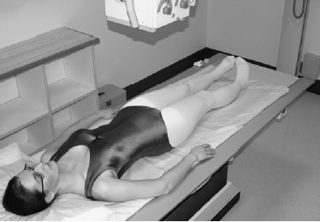

Hip/Pelvis(AP)
Centering point:Centre in the midline, with a vertical central beam.
The centre of the cassette is placed midway between the upper
border of the symphysis pubis and anterior superior iliac spine
for the whole of the pelvis and proximal femora. The upper
edge of the cassette should be 5 cm above the upper border of
the iliac crest to compensate for the divergent beam and to
ensure that the whole of the bony pelvis is included.
The centre of the cassette is placed level with the upper border
of the symphysis pubis for the hips and upper femora.

Cassette Size:24cm x 30cm (12 x 10 ins)
Potrait
Exposure Factors:70kVp on
20MaS
FFD:100cm
Bucky/Grid:Moving or Stationary Grid
Filter:No
Collimation:Collimate to four sides of interest
Pathologies:Fracture, Lesions, Joint narrowing, Waist Pain,
Position of patient and cassette
- The patient lies supine and symmetrical on the X-ray table,
with the median sagittal plane perpendicular to the tabletop.
- The midline of the patient must coincide with the centred
primary beam and table Bucky mechanism.
- If the patient remains on a trolley, ideally they should be positioned
down the midline and adjusted to achieve an optimum
projection dependent on their degree of mobility.
-
If the patient remains on a trolley, ideally they should be positioned
down the midline and adjusted to achieve an optimum
projection dependent on their degree of mobility.
- The limbs are slightly abducted and internally rotated to bring
the femoral necks parallel to the cassette.